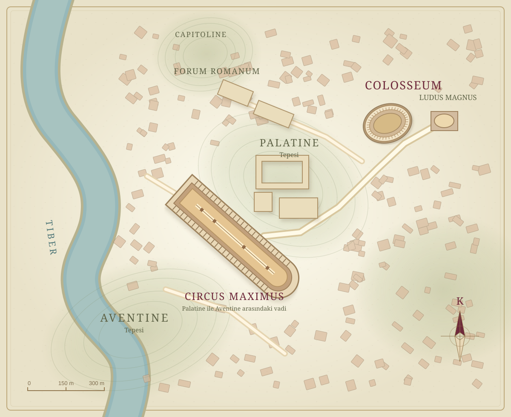

Kuzey ↑ Ludus ve Roma’nın gösteri alanları
Ludus, gladyatörlerinin antrenman avlusuna ve okul yönetimine açılır. Colosseum mevcut savaş seçimine açılır. Circus Maximus, Palatine ve Aventine tepeleri arasında tek bir hipodromdur; haritadan Palatine girişine ulaşılır.
Yapı işaretleri coğrafi konumlarına göre yerleştirildi. Şehir dokusu ve dış cephe görselleri yorumlu tarihî canlandırmalardır; yaklaşım işaretleri kesin olarak belgelenmiş antik kapı planları değildir.